这是我入手的第一款RPG游戏，也是我迄今为止买的最贵的游戏，在大一的那个寒假狠下心来用压岁钱花了四百多在Steam上买的正版，后来在今年年初买PS4 Slim时又买了一张二手光碟以及DLC。
尽管游戏玩了3遍，但是不敢保证说我把尼尔前前后后的每个细节都弄清楚，不过还是打算把我遇到的一些有意思的地方记录到博客中。

遊樂園廢墟
第一次玩尼尔：机械纪元时除了一些必要的支线任务外，其他支线任务几乎都没有做完就主线通关删档了。
因为PC端没有官方汉化，觉得第三方汉化过于生硬就没有安装汉化包，于是我第一次玩这游戏时几乎全程英文生肉啃下来的，所以尽管游戏结局很令我感动，但是机械纪元究竟讲了怎样一个故事，期间为什么会发生这些事情，以及银莲、A2的过去究竟发生了什么，艾米尔是谁，为什么人们都说他很惨，塑料姐妹花的经历，为什么她们背负着很多罪孽我其实都不知道，所以第一遍玩完这个游戏后我很迫不及待的找了一个时间开始玩第二遍。
第一次打这游戏时全程简单模式+自动芯片，因为没打支线练等级所以三周目时因为等级太低，半天杀不死一个怪物。
然后因为没有手柄，只用鼠标操作，所以9s进行骇入后用鼠标很难控制方向，所以9s打怪时我几乎全程用手打，几乎没怎么进行骇入。
二刷时买了联想拯救者的xbox的有线手柄，就为了打尼尔。因为渣笔记本性能弱，游戏优化很差，GTX1050Ti只能开低画质降低分辨率至1366x768，才勉强30帧“流畅”运行，不过第二次玩尼尔时也是由于时间原因没有做很多支线，E结局到现在也没打完，一方面是因为懒，另一方面是因为后来买了PS4。
入手PS4后才终于才体验到比较流畅高清的画质，加上官方原配的繁体中文字幕(尽管是对照日语字幕翻译的，开英文语音时觉得字幕和语音有些对不上)，能更好的理解一些剧情。然后准确来说去年疫情 超长假期 的时候还买了繁体中文的尼尔短话和长话小说，所以对一些幕后的剧情有了简单的了解，所以我把绝大多数支线都做完了(除了三周目末尾的一个向4s汇报情报的支线以及速度之星这个废手的支线外，别的应该是都做完了)，还攒了全武器，打通了全结局(26结局+dlc结局)，最后在寝室打了E结局然后心满意足的删档。尽管游戏里还有一些特性我没有尝试触发（比如B站上随处可见的卡墙bug，左脚踩右脚上天，如何流畅帅气的打怪之类的），DLC斗兽场的最难级别没有打过（对我这手残党来说真的太难了），所以没有亲自打死SQUARE ENIX社长（大雾）有些可惜。不过我觉得还是可以先把我在这个游戏里的一些回忆记录下来，不然时间久了就又忘了。
想了一下我不太会以叙事的方式讲述游戏的剧情，讲出来的话也就是通篇流水帐，所以我只打算把一些自认为不错的游戏截图贴上来，至于文字描述我暂时先不打算写，以后有时间再补上。
其实我今年4月份就把游戏就打完了，但是我硬是拖了这么久才把游玩记录写到博客上。
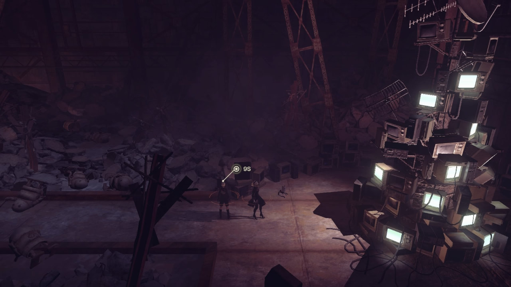
记忆
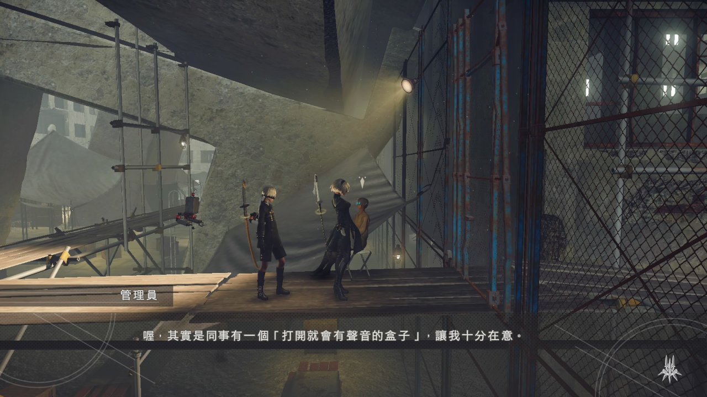
八音盒

游乐园的月之泪

充满“干劲”的机器人

游乐园

机器人版 罗密欧与朱丽叶

描述人类残暴性的作品

摸头

NieR:AutoFishing
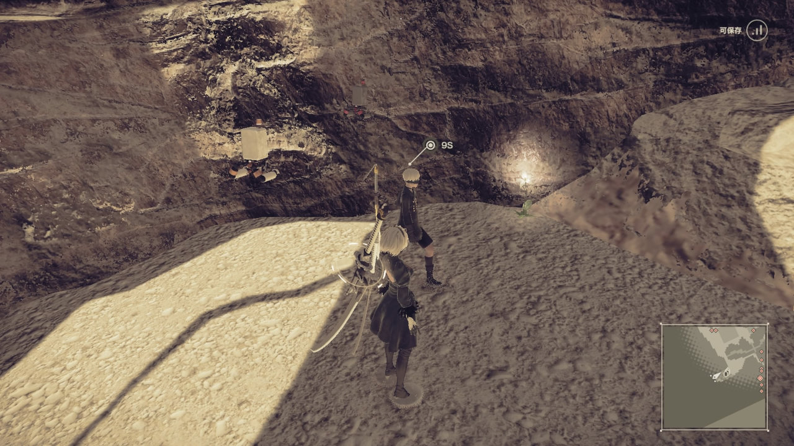
Lunar Tear

4s

A2

艾米尔的家

森林国王
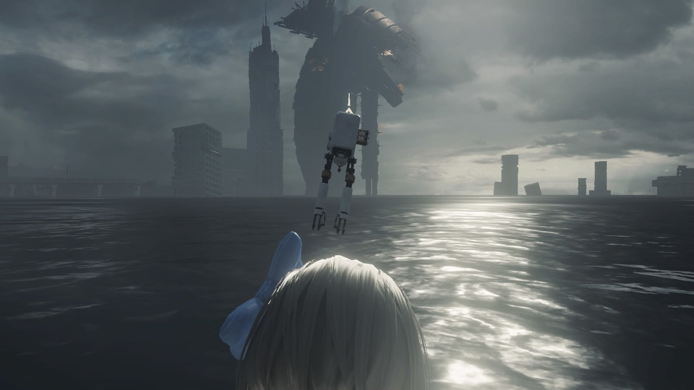
沉没都市
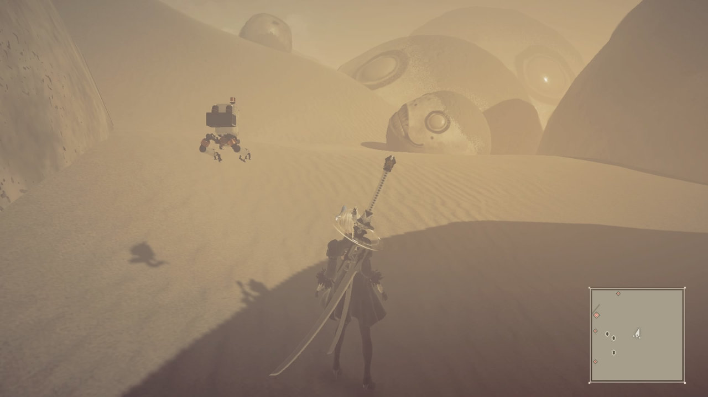
艾米尔的决意

9s 陪寝

任务

创造不是那么简单的事了

记好啦
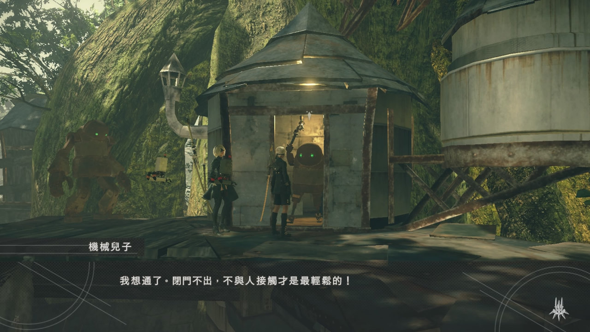
最轻松的！

第6次格式化

女人真恐怖

Morning!
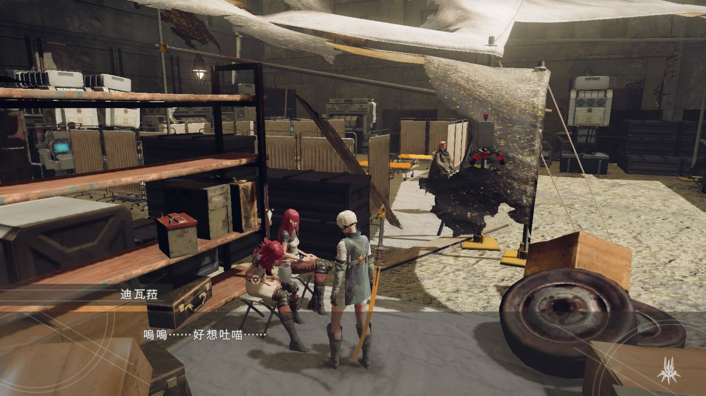
Meow

4s
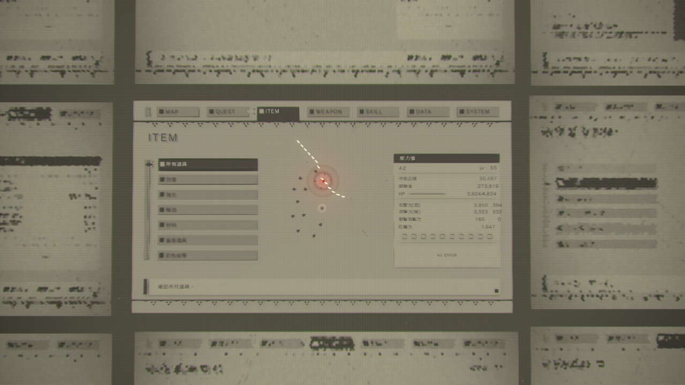
Hacking A2
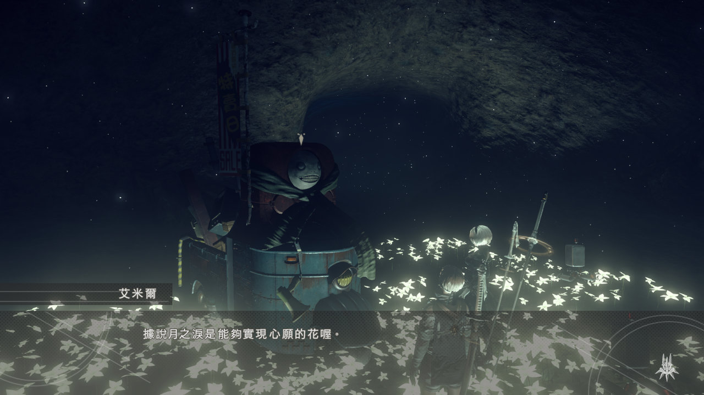
Emil's Memory

Share Happiness!

Emil's Home

《没中》

孩子们的核心
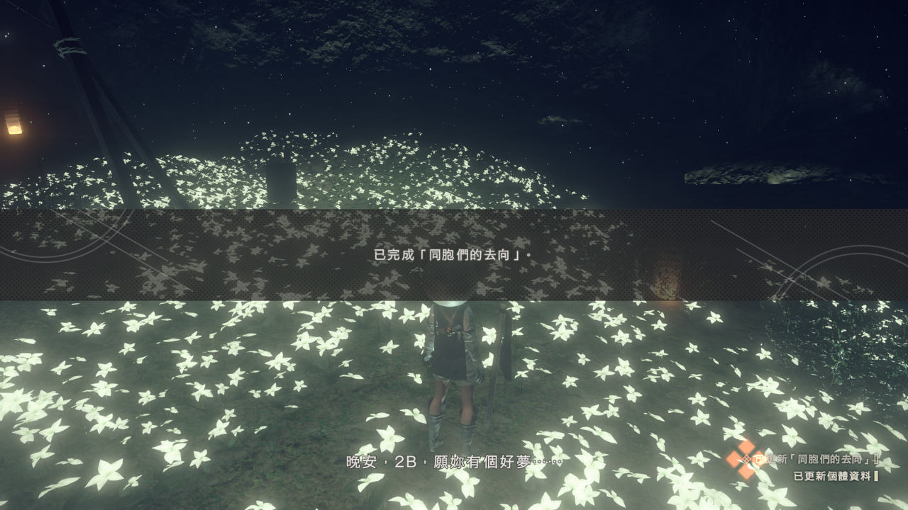
晚安，好梦！

Brother
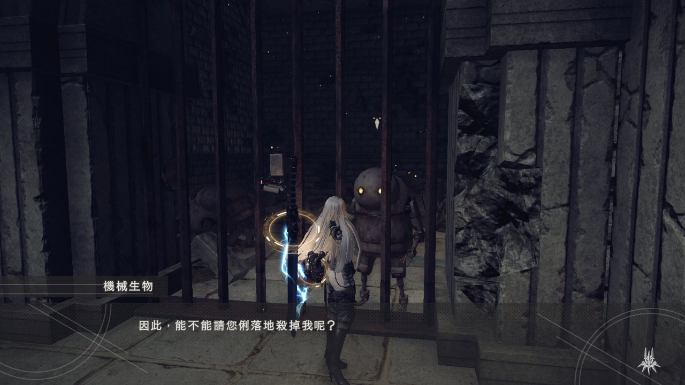
利落地杀掉我

柏拉图

柏拉图的回忆
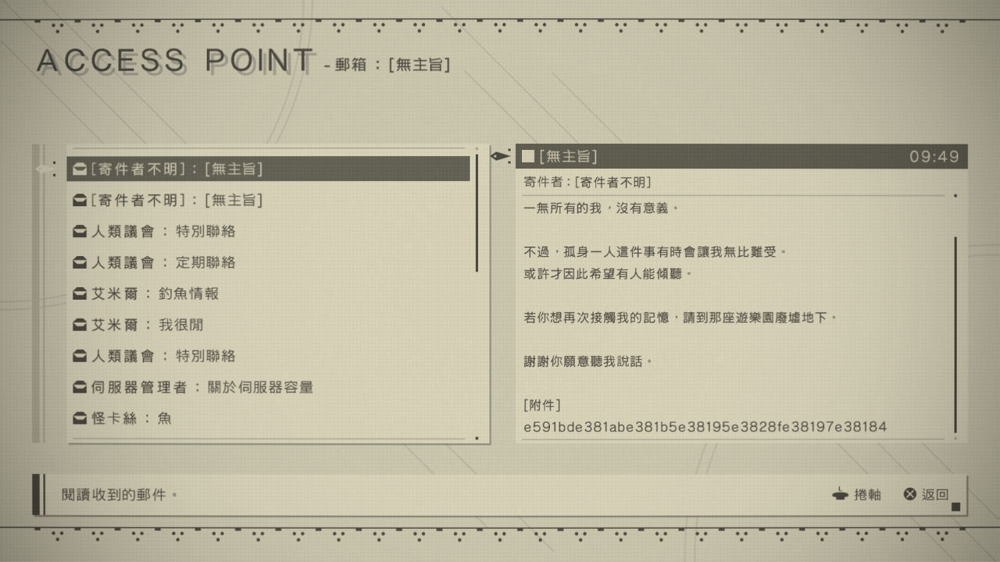
谢谢你愿意听我说话
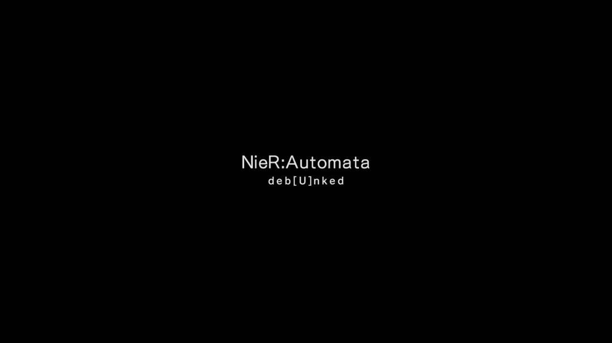
deb[U]nked

好一个逃离现场
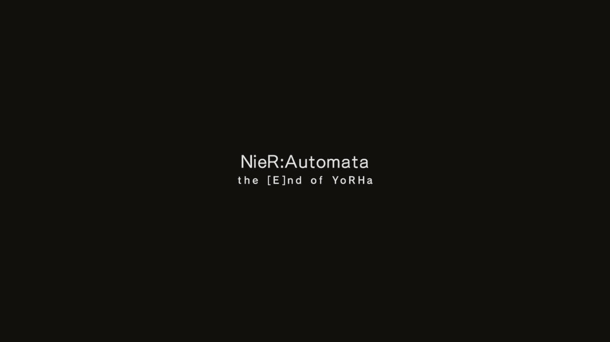
[E]nd
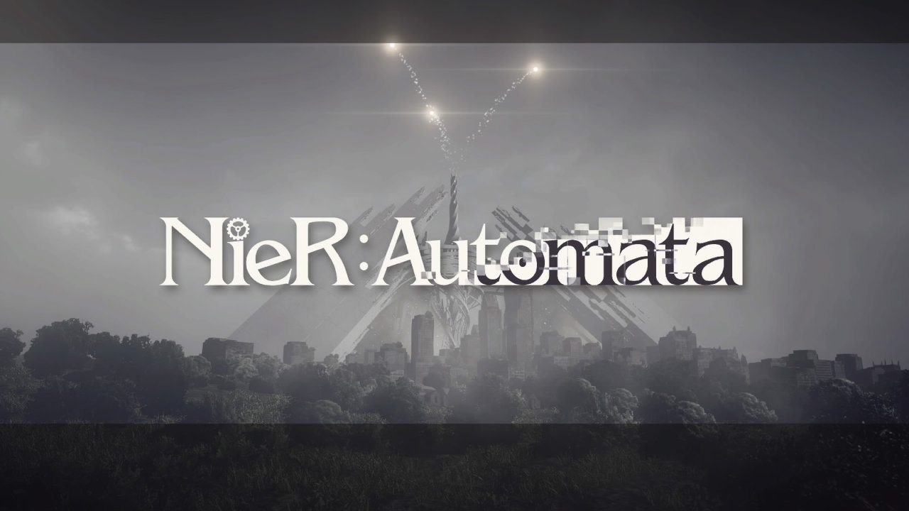
NieR:Automata